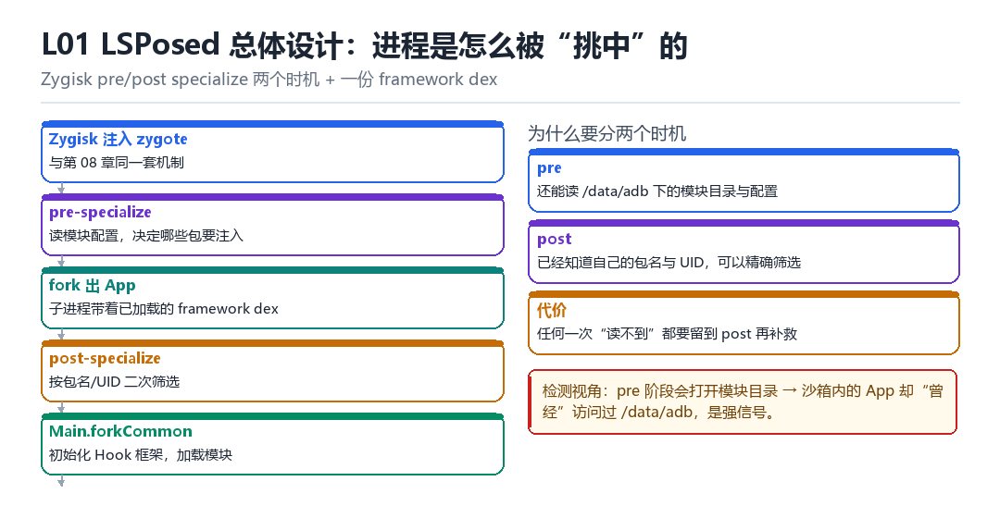

L01
LSPosed 总体设计与进程进入
Zygisk pre/post specialize、进程筛选、framework DEX、Binder、Main.forkCommon
先解决“进不进得来”，再解决“进来之后干什么”。
1.1 五个阶段

- Zygisk 注入 zygote：与第 08 章同一套机制。
- pre-specialize：读模块配置，决定哪些包需要注入。
- fork 出 App：子进程带着已加载的 framework dex。
- post-specialize：按包名 / UID 做二次筛选。
- Main.forkCommon：初始化 Hook 框架，加载模块。
1.2 为什么要分两个时机
| 时机 | 优势 | 限制 |
|---|---|---|
| pre-specialize | 还能读 /data/adb 下的模块目录与配置 | 还不知道自己的包名 |
| post-specialize | 已知道包名与 UID，可精确筛选 | 读不到模块目录 |
所以典型做法是：pre 阶段把需要的东西（dex、配置）先读进内存，post 阶段再根据“我是谁”决定用不用。
1.3 检测视角
pre 阶段会打开模块目录，而一个沙箱内的 App 却“曾经”访问过 /data/adb——这是很强的信号。同理，framework dex 的内存映射、以及 fork 之后多出来的 dexElements，也都是线索。
1.4 本章自测
- pre 与 post 两个时机各能做什么、不能做什么？
- 为什么要把 dex 在 pre 阶段就读进内存？
- pre 阶段访问 /data/adb 会留下什么信号？
- 如果目标进程没有 forkCommon（比如纯 native 进程），会发生什么？
1.5 深入：framework dex 为什么要预加载
如果每个 App 进程在运行时才去读 dex 文件，会有两个问题：一是慢，二是“读文件”这个动作本身可见。预加载到 zygote 后，子进程通过 fork 直接继承内存映射，既不慢也不产生新的文件访问。
| 方式 | 启动开销 | 文件访问痕迹 |
|---|---|---|
| 运行时读取 | 高 | 明显 |
| zygote 预加载 | 低 | 仅一次 |
1.6 实战：判断某个进程是否被注入
三个信号
# 1. maps 里有没有 framework dex 的匿名映射
grep -c 'anon' /proc/<pid>/maps
# 2. ClassLoader 数量是否异常
# 3. dexElements 里是否有私有目录路径1.7 原理推演：为什么要在“两个时机”分别做事
因为“能读到什么”与“知道我是谁”这两件事，在时间上是错开的：fork 之后、specialize 之前，能读模块目录但不知道自己是谁；specialize 之后，知道自己是谁但读不到模块目录。
| 信息 | pre | post |
|---|---|---|
| 模块目录 | 可读 | 不可读 |
| 包名 / UID | 未知 | 已知 |
| SELinux 域 | zygote 域 | untrusted_app 域 |
所以正确的架构是“pre 读、post 用”——把需要的东西提前读进内存，等知道身份后再决定用不用。
1.8 数据细节：forkCommon 做了什么
初始化顺序（概念）
1. 初始化 Hook 框架（LSPlant）
2. 创建模块的 ClassLoader
3. 加载各模块的入口类
4. 按配置调用模块的 init
5. 注册后续的 hook如果第 3 步失败（模块 dex 加载不了），表现是“框架起来了但模块没生效”。排查时先看这一步的日志。
1.9 深入：进程筛选的三种粒度
| 粒度 | 依据 | 优缺点 |
|---|---|---|
| 全量 | 所有 App | 简单，但开销大、暴露面广 |
| 按包名 | 配置白名单 | 精确，但配置要维护 |
| 按 UID | 运行时判断 | 能覆盖多进程 App |
实践中常用“包名 + UID”组合：包名决定“要不要进”，UID 决定“进来后怎么处理多进程”。
1.10 深入：framework dex 的加载时机
它必须在“App 的 ClassLoader 创建之前”就准备好，否则插不进 dexElements。这也是为什么它要在 pre-specialize 阶段读进内存——那时还没有 App 的 ClassLoader。
概念顺序
pre-specialize: 读 framework dex 到内存
fork -> specialize: App 的 ClassLoader 创建
post-specialize: 把 dex 插进 dexElements1.11 实战：确认 forkCommon 是否被调用
三个信号
1. 日志里有框架初始化输出
2. ClassLoader 数量比基线多
3. dexElements 里有额外条目